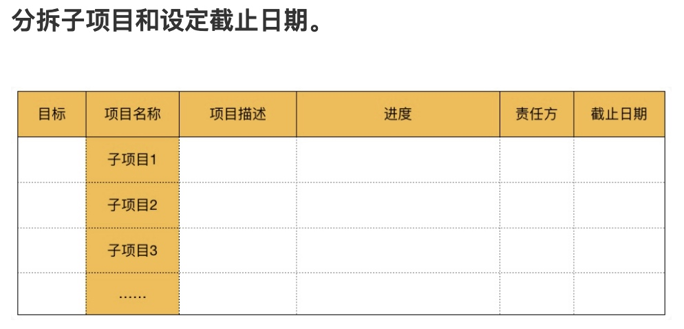

这是自己第一次完整的学习时间管理课程，很羡慕那种时间管理做得好的人，他们一天可以当做三天来用，一天可以干成很多事，而且时间颗粒度非常的细致，甚至于精确到分钟，从而在职场上更具职业素养和职业化。
过去学习的时间管理一般都是从重要、紧急、不重要、不紧急的四象限开始，虽然有一定的帮助，解决了一些棘手的问题。但很多时候，还是没日没夜的，被一些重要和紧急的事情馋的脱不开身。
周三的新员工培训，有讲到积极主动，当时举了个例子“我根本没时间做”是将责任推给了环境，推给了时间。从积极主动的角度出发，我可以学习时间管理，拒绝不重要和不紧急的事情。
虽然学习过时间管理，但学习了汤君健老师的《怎样成为时间管理高手》后，发现自己差的其实更是一个有技巧的计划能力。
做好工作计划，是可以帮助自己做好规划和备忘
每周、月度、季度、年度都会做工作计划，不光要了解你要做什么，更是关注你是否具备达成目标的有效路径。
而备忘，很多时候是自己遗失掉的，所以有时候无法全勤投入，并保持清晰的方向。终究就被一些其他的事务带偏了。
1.项目管理表
自己漏掉的更多的是在执行过程中，如何将一些复杂的项目进行拆分。当所负责的工作，较为复杂的时候，特别是白天在公司，是无法静下心来具体做。这时候如果能进行拆分，或许会更好。
可以按照工作内容属性或者阶段属性进行拆分，也可以串行与并行拆分。如果时间周期较长，可以指定工作进度条和截止时间，适当的再加上颜色来提醒自己。
2.日历表
近几年在Foxmail的日历提醒是用得最多的，日历表是可以从时间的维度来帮助自己锁定重要的事情。而我目前的日历表，更多的是一个到期提醒装置，当做备忘来用了。很多时候重要的且占用时间长的事情，都被安排到了一天。
所以更需要将事项所用的时间做预估后，先将短期需要完成，对工作结果有直接影响的，长期投资有利益的事情和一些不能错过的重要时间节点先做安排。之后再将一些其他的事情填入到这些日历的缝隙之中。最好还能预留出20%的时间缓冲，用来应付哪些突发事件。
3.日计划
有了项目表和日历表，就应该清楚的知道每自己该如何做了。但需要把日计划细化一些，备注除一些当天必须完成的事情，而不要因为其他人的不确定性，导致自己没能完成当日的目标，最后一连串的工作未完成。
4.我自己用到的工具
Foxmail除了本身的邮件功能外，最好用的就属于日历提醒功能了，可以按天，按时来提醒，但需要结合日历表的方法来做。
语雀，支付宝员工内部开发的知识管理工具，现在已经商业化了。将每月、每日的计划和总结，都更新到语雀中，在多台电脑，微信小程序上，都是可以同步更新。
附：
项目管理表
